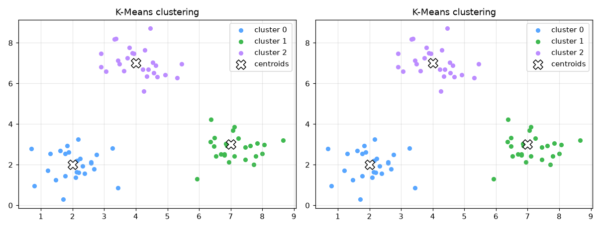

Market Segmentation (K-Means) — AI engineering example · part of the MLOps monorepo
This example is grounded in Market Segmentation (K-Means). The equations below drive every forward and backward pass in the implementation.
K-Means partitions data into $k$ clusters by minimizing within-cluster sum of squares. The Expectation-Maximization (EM) algorithm alternates between: (1) assigning each point to the nearest centroid, and (2) recomputing centroids as the mean of assigned points. Convergence is guaranteed but the solution depends on initialization.
Concrete forward-pass / update evaluation using the algorithm's own equations:
A step-by-step, intuitive explanation with concrete data so the formal equations above become clear:
Run this self-contained snippet in a Python shell to watch every step execute and print its value:
import numpy as np
pts = np.array([[0,0],[1,0],[8,8],[9,8]], float) # customer locations
mu0, mu1 = np.array([0.,0.]), np.array([9.,8.]) # two starting cluster centers
def assign(p): return 0 if np.linalg.norm(p-mu0) < np.linalg.norm(p-mu1) else 1 # nearest center
labels = [assign(p) for p in pts] # assign each point to a cluster
print("labels =", labels)
mu0 = pts[np.array(labels)==0].mean(0); mu1 = pts[np.array(labels)==1].mean(0) # recompute centers
print("new mu0 =", np.round(mu0,2), " mu1 =", np.round(mu1,2))
Plots of the execution above — left: the concept; right: the step-by-step computation visualised. Interactive elbow method plot; cluster visualization with centroids; silhouette score explorer.
The example follows a consistent data → train → evaluate → serve pipeline. Inputs are loaded and validated, transformed by the core algorithm, scored against held-out data, and exposed through a REST API.
| Class | Public methods | Responsibility |
|---|---|---|
SegmentRequest | — | Single customer segmentation request. |
SegmentBulkRequest | — | Bulk customer segmentation request. |
SegmentResponse | — | Segmentation response for a single customer. |
BulkSegmentResponse | — | Bulk segmentation response. |
ProfilesResponse | — | Cluster profiles for business interpretation. |
DriftResponse | — | Drift detection response. |
KMeans | _standardize, _compute_distances, _fit_once, fit, predict, predict_confidence, cluster_profiles, evaluate, _compute_silhouette, save, load, to_dict | K-Means clustering for customer market segmentation. Uses Lloyd's algorithm with multiple random initializations (n_init) and picks the run with the lowest inertia. |
data.py reads the source dataset and splits train/test.model.py applies the mathematics from Section 1.api.py exposes prediction endpoints with drift detection.Key design choices in this module: a pure-NumPy implementation (no PyTorch/TensorFlow), schema validation via ai_core.validation, structured JSON logging through ai_core.logging, Prometheus metrics from ai_core.metrics, and MLflow/model-registry persistence via ai_core.model_registry. The FastAPI service wraps the trained model with observability middleware from ai_core.fastapi_middleware.
The most important behaviour is summarised below; full source for each module is collapsible so the page stays readable while remaining self-contained.
KMeans.fit(X)Train the K-Means model on the given data. Args: X: array of shape (n_samples, n_features) Returns: self
KMeans.predict(X)Assign each sample to the nearest cluster centroid. Args: X: array of shape (n_samples, n_features) Returns: Array of cluster indices with shape (n_samples,)
KMeans.evaluate(X)Compute unsupervised clustering evaluation metrics. Args: X: array of shape (n_samples, n_features) Returns: Dict with 'inertia', 'silhouette', and 'n_clusters'
"""K-Means clustering model for market segmentation.
Implements a production-ready K-Means clustering model with:
- Standard K-Means training with multiple initializations
- Feature standardization
- Confidence scoring based on distance to nearest centroid
- Proper serialization with metadata
- Cluster profiling for business interpretation
"""
from dataclasses import dataclass
import numpy as np
@dataclass
class KMeans:
"""K-Means clustering for customer market segmentation.
Uses Lloyd's algorithm with multiple random initializations (n_init)
and picks the run with the lowest inertia.
"""
n_clusters: int = 5
max_iterations: int = 300
n_init: int = 10
random_seed: int = 42
centroids: np.ndarray | None = None
labels: np.ndarray | None = None
feature_mean: np.ndarray | None = None
feature_std: np.ndarray | None = None
inertia: float = 0.0
n_iterations_used: int = 0
def _standardize(self, X: np.ndarray) -> np.ndarray:
"""Standardize features to zero mean and unit variance."""
if self.feature_mean is None or self.feature_std is None:
raise ValueError("Model not trained. Call fit() first.")
return (X - self.feature_mean) / (self.feature_std + 1e-8)
def _compute_distances(self, X: np.ndarray, centroids: np.ndarray) -> np.ndarray:
"""Compute squared Euclidean distances from each point to each centroid."""
# X: (n_samples, n_features), centroids: (n_clusters, n_features)
# Returns: (n_samples, n_clusters)
return np.sum((X[:, np.newaxis, :] - centroids[np.newaxis, :, :]) ** 2, axis=2)
def _fit_once(
self, X: np.ndarray, rng: np.random.Generator
) -> tuple[np.ndarray, np.ndarray, float, int]:
"""Run K-Means once with a single random initialization."""
n_samples, n_features = X.shape
# Random initialization: pick k random points as initial centroids
indices = rng.choice(n_samples, size=self.n_clusters, replace=False)
centroids = X[indices].copy()
labels = np.zeros(n_samples, dtype=int)
inertia = 0.0
n_iter = 0
for _ in range(self.max_iterations):
n_iter += 1
# Assign points to nearest centroid
distances = self._compute_distances(X, centroids)
new_labels = np.argmin(distances, axis=1)
# Check convergence
if np.array_equal(new_labels, labels):
labels = new_labels
break
labels = new_labels
# Update centroids
new_centroids = centroids.copy()
for k in range(self.n_clusters):
mask = labels == k
if np.any(mask):
new_centroids[k] = np.mean(X[mask], axis=0)
# Check centroid convergence
if np.allclose(new_centroids, centroids, atol=1e-6):
centroids = new_centroids
break
centroids = new_centroids
# Compute final inertia
distances = self._compute_distances(X, centroids)
min_distances = np.min(distances, axis=1)
inertia = float(np.sum(min_distances))
return centroids, labels, inertia, n_iter
def fit(self, X: np.ndarray) -> "KMeans":
"""Train the K-Means model on the given data.
Args:
X: array of shape (n_samples, n_features)
Returns:
self
"""
X = np.asarray(X, dtype=float)
if X.ndim != 2:
raise ValueError(f"Expected 2D array, got {X.ndim}D")
# Compute feature statistics for standardization
self.feature_mean = np.mean(X, axis=0)
self.feature_std = np.std(X, axis=0)
X_std = self._standardize(X)
rng = np.random.default_rng(self.random_seed)
best_centroids = None
best_labels = None
best_inertia = float("inf")
best_n_iter = 0
for _ in range(self.n_init):
centroids, labels, inertia, n_iter = self._fit_once(X_std, rng)
if inertia < best_inertia:
best_centroids = centroids
best_labels = labels
best_inertia = inertia
best_n_iter = n_iter
self.centroids = best_centroids
self.labels = best_labels
self.inertia = best_inertia
self.n_iterations_used = best_n_iter
return self
def predict(self, X: np.ndarray) -> np.ndarray:
"""Assign each sample to the nearest cluster centroid.
Args:
X: array of shape (n_samples, n_features)
Returns:
Array of cluster indices with shape (n_samples,)
"""
if self.centroids is None:
raise ValueError("Model not trained. Call fit() first.")
X = np.asarray(X, dtype=float)
if X.ndim == 1:
X = X.reshape(1, -1)
X_std = self._standardize(X)
distances = self._compute_distances(X_std, self.centroids)
return np.argmin(distances, axis=1)
def predict_confidence(self, X: np.ndarray) -> np.ndarray:
"""Compute confidence scores for each prediction.
Confidence is based on the relative distance to the nearest vs
second-nearest centroid. A value of 1.0 means the point is very
close to its assigned centroid relative to others.
Args:
X: array of shape (n_samples, n_features)
Returns:
Array of confidence scores in [0, 1] with shape (n_samples,)
"""
if self.centroids is None:
raise ValueError("Model not trained. Call fit() first.")
X = np.asarray(X, dtype=float)
if X.ndim == 1:
X = X.reshape(1, -1)
X_std = self._standardize(X)
distances = self._compute_distances(X_std, self.centroids)
# Sort distances to get nearest and second-nearest
sorted_distances = np.sort(distances, axis=1)
nearest = sorted_distances[:, 0]
second_nearest = sorted_distances[:, 1]
# Confidence: 1 - (nearest / second_nearest), clipped to [0, 1]
# If second_nearest is 0 (duplicate points), confidence is 1.0
with np.errstate(divide="ignore", invalid="ignore"):
ratio = np.where(second_nearest > 0, nearest / second_nearest, 0.0)
confidence = np.clip(1.0 - ratio, 0.0, 1.0)
return confidence
def cluster_profiles(self, X: np.ndarray) -> list[dict]:
"""Compute cluster profiles for business interpretation.
Args:
X: array of shape (n_samples, n_features) - typically reference data
Returns:
List of dicts with cluster statistics
"""
if self.centroids is None:
raise ValueError("Model not trained. Call fit() first.")
X = np.asarray(X, dtype=float)
labels = self.predict(X)
profiles = []
for k in range(self.n_clusters):
mask = labels == k
cluster_points = X[mask]
n_members = int(np.sum(mask))
if n_members > 0:
profile = {
"cluster": k,
"n_members": n_members,
"percentage": round(float(n_members / len(X) * 100), 2),
"annual_income_mean": round(float(np.mean(cluster_points[:, 0])), 2),
"annual_income_std": round(float(np.std(cluster_points[:, 0])), 2),
"spending_score_mean": round(float(np.mean(cluster_points[:, 1])), 2),
"spending_score_std": round(float(np.std(cluster_points[:, 1])), 2),
}
else:
profile = {
"cluster": k,
"n_members": 0,
"percentage": 0.0,
"annual_income_mean": 0.0,
"annual_income_std": 0.0,
"spending_score_mean": 0.0,
"spending_score_std": 0.0,
}
profiles.append(profile)
return profiles
def evaluate(self, X: np.ndarray) -> dict[str, float]:
"""Compute unsupervised clustering evaluation metrics.
Args:
X: array of shape (n_samples, n_features)
Returns:
Dict with 'inertia', 'silhouette', and 'n_clusters'
"""
if self.centroids is None:
raise ValueError("Model not trained. Call fit() first.")
X = np.asarray(X, dtype=float)
labels = self.predict(X)
# Inertia (within-cluster sum of squares)
X_std = self._standardize(X)
distances = self._compute_distances(X_std, self.centroids)
min_distances = np.min(distances, axis=1)
inertia = float(np.sum(min_distances))
# Silhouette score (simplified computation)
silhouette = self._compute_silhouette(X_std, labels)
return {
"inertia": inertia,
"silhouette": silhouette,
"n_clusters": float(self.n_clusters),
}
def _compute_silhouette(self, X_std: np.ndarray, labels: np.ndarray) -> float:
"""Compute the average silhouette score."""
n_samples = len(X_std)
if n_samples < 2 or self.n_clusters < 2:
return 0.0
# Compute pairwise distances
# For efficiency, use a simplified approach with cluster centroids
silhouette_sum = 0.0
n_valid = 0
for i in range(n_samples):
label = labels[i]
point = X_std[i]
# Compute mean distance to own cluster (a)
own_mask = labels == label
if np.sum(own_mask) <= 1:
continue # Singleton cluster
own_points = X_std[own_mask]
a = np.mean(np.sqrt(np.sum((own_points - point) ** 2, axis=1)))
# Compute mean distance to nearest other cluster (b)
b = float("inf")
for k in range(self.n_clusters):
if k == label:
continue
other_mask = labels == k
if np.sum(other_mask) == 0:
continue
other_points = X_std[other_mask]
dist = np.mean(np.sqrt(np.sum((other_points - point) ** 2, axis=1)))
b = min(b, dist)
if b == float("inf"):
continue
# Silhouette for this point
s = (b - a) / max(a, b)
silhouette_sum += s
n_valid += 1
if n_valid == 0:
return 0.0
return float(silhouette_sum / n_valid)
# ---------- Serialization ----------
def save(self, path: str) -> None:
"""Save model parameters to disk."""
if self.centroids is None:
raise ValueError("Cannot save untrained model")
np.savez(
path,
centroids=self.centroids,
feature_mean=self.feature_mean,
feature_std=self.feature_std,
n_clusters=self.n_clusters,
max_iterations=self.max_iterations,
n_init=self.n_init,
random_seed=self.random_seed,
inertia=self.inertia,
n_iterations_used=self.n_iterations_used,
)
@classmethod
def load(cls, path: str) -> "KMeans":
"""Load model parameters from disk."""
data = np.load(path)
model = cls(
n_clusters=int(data["n_clusters"]),
max_iterations=int(data["max_iterations"]),
n_init=int(data["n_init"]),
random_seed=int(data["random_seed"]),
)
model.centroids = data["centroids"]
model.feature_mean = data["feature_mean"]
model.feature_std = data["feature_std"]
model.inertia = float(data["inertia"])
model.n_iterations_used = int(data["n_iterations_used"])
return model
def to_dict(self) -> dict:
"""Return model parameters as a dict."""
return {
"n_clusters": self.n_clusters,
"max_iterations": self.max_iterations,
"n_init": self.n_init,
"random_seed": self.random_seed,
"inertia": self.inertia,
"n_iterations_used": self.n_iterations_used,
}"""Production training pipeline for market segmentation (unsupervised K-Means)."""
import argparse
import os
from pathlib import Path
import numpy as np
from ai_core.logging import get_logger, setup_logging
from ai_core.model_registry import ModelRegistry
from ai_core.validation import DataValidator, create_market_segmentation_schema
from market_segmentation.data import load_training_data, save_training_data
from market_segmentation.model import KMeans
logger = get_logger(__name__)
def train(
model_dir: Path,
data_path: Path,
n_clusters: int,
max_iterations: int,
n_init: int,
model_version: str,
register_to_mlflow: bool = False,
random_seed: int = 42,
) -> dict:
"""Train the market segmentation K-Means model and save artifacts.
Returns:
Dictionary with training metrics
"""
# Load training data
X, y = load_training_data(data_path)
logger.info("Loaded training data", n_samples=len(X), n_features=X.shape[1])
# Validate training data
validator = DataValidator(create_market_segmentation_schema())
validation = validator.validate(X)
if not validation.valid:
logger.error("Training data validation failed", errors=validation.errors)
raise ValueError(f"Training data validation failed: {validation.errors}")
logger.info("Training data validated", stats=validation.stats)
# Save training data for reproducibility
save_training_data(X, y, model_dir / "training_data.csv")
# Train model
model = KMeans(
n_clusters=n_clusters,
max_iterations=max_iterations,
n_init=n_init,
random_seed=random_seed,
)
model.fit(X)
# Evaluate clustering quality
metrics = model.evaluate(X)
logger.info(
"Training complete",
n_clusters=model.n_clusters,
inertia=model.inertia,
silhouette=metrics["silhouette"],
n_iterations_used=model.n_iterations_used,
)
# Model validation - check silhouette score
if metrics["silhouette"] < 0.1:
logger.warning(
"Model silhouette score below threshold",
silhouette=metrics["silhouette"],
threshold=0.1,
)
# Save model
model_path = model_dir / f"market_segmentation_model_v{model_version}.npz"
model.save(str(model_path))
# Save training chart
_save_chart(model, X, model_dir, model_version)
# Combined metrics for registry
training_metrics = {
"inertia": metrics["inertia"],
"silhouette": metrics["silhouette"],
"n_clusters": float(n_clusters),
"n_samples": len(X),
"n_iterations_used": float(model.n_iterations_used),
}
# Register model
registry = ModelRegistry(base_dir=model_dir)
registry.save_model(
model_name="market-segmentation",
model_version=model_version,
model_type="clustering",
metrics=training_metrics,
parameters={
"n_clusters": n_clusters,
"max_iterations": max_iterations,
"n_init": n_init,
"random_seed": random_seed,
},
artifacts={
f"market_segmentation_model_v{model_version}.npz": model_path,
"training_data.csv": model_dir / "training_data.csv",
},
tags={"framework": "numpy", "task": "clustering"},
)
if register_to_mlflow:
registry.log_to_mlflow(
model_name="market-segmentation",
model_version=model_version,
metrics=training_metrics,
params={
"n_clusters": n_clusters,
"max_iterations": max_iterations,
"n_init": n_init,
"random_seed": random_seed,
},
artifacts={
"model": str(model_path),
"chart": str(model_dir / f"market_segmentation_v{model_version}.png"),
"training_data": str(model_dir / "training_data.csv"),
},
tags={"model_type": "clustering", "framework": "numpy"},
)
logger.info(
"Registered model to MLflow", model="market-segmentation", version=model_version
)
return training_metrics
def _save_chart(model: KMeans, X: np.ndarray, output_dir: Path, version: str) -> None:
"""Save the clustering chart."""
import matplotlib
matplotlib.use("Agg")
import matplotlib.pyplot as plt
if model.centroids is None:
return
plt.figure(figsize=(10, 6))
# Plot data points colored by cluster
labels = model.predict(X)
scatter = plt.scatter(
X[:, 0],
X[:, 1],
c=labels,
cmap="viridis",
s=50,
alpha=0.6,
label="Customers",
)
# Plot centroids
# Need to unstandardize centroids for plotting
if model.feature_mean is not None and model.feature_std is not None:
centroids_orig = model.centroids * model.feature_std + model.feature_mean
plt.scatter(
centroids_orig[:, 0],
centroids_orig[:, 1],
c="red",
marker="X",
s=200,
edgecolors="black",
linewidths=2,
label="Centroids",
)
plt.colorbar(scatter, label="Cluster")
plt.xlabel("Annual Income (k$)")
plt.ylabel("Spending Score (0-100)")
plt.title(f"Market Segmentation Clusters - v{version}")
plt.grid(True, alpha=0.3)
plt.legend()
chart_path = output_dir / f"market_segmentation_v{version}.png"
plt.tight_layout()
plt.savefig(str(chart_path), dpi=100)
plt.close()
logger.info("Chart saved", path=str(chart_path))
def main():
parser = argparse.ArgumentParser(description="Train market segmentation K-Means model")
parser.add_argument("--model-dir", type=Path, default=Path(os.getenv("MODEL_DIR", "/models")))
parser.add_argument("--data-path", type=Path, default=None)
parser.add_argument("--n-clusters", type=int, default=int(os.getenv("N_CLUSTERS", "5")))
parser.add_argument(
"--max-iterations", type=int, default=int(os.getenv("MAX_ITERATIONS", "300"))
)
parser.add_argument("--n-init", type=int, default=int(os.getenv("N_INIT", "10")))
parser.add_argument("--model-version", type=str, default=os.getenv("MODEL_VERSION", "1.0.0"))
parser.add_argument("--random-seed", type=int, default=int(os.getenv("RANDOM_SEED", "42")))
parser.add_argument(
"--register-mlflow",
action="store_true",
default=os.getenv("REGISTER_MLFLOW", "false").lower() == "true",
)
parser.add_argument("--log-level", type=str, default=os.getenv("LOG_LEVEL", "INFO"))
args = parser.parse_args()
setup_logging(args.log_level)
args.model_dir.mkdir(parents=True, exist_ok=True)
metrics = train(
model_dir=args.model_dir,
data_path=args.data_path,
n_clusters=args.n_clusters,
max_iterations=args.max_iterations,
n_init=args.n_init,
model_version=args.model_version,
register_to_mlflow=args.register_mlflow,
random_seed=args.random_seed,
)
logger.info("Training finished", metrics=metrics, model_dir=str(args.model_dir))
if __name__ == "__main__":
main()"""Data loading and preprocessing for market segmentation.
Generates a realistic synthetic customer dataset with distinct behavioural
segments, designed for unsupervised K-Means clustering:
Segments:
1. Premium Shoppers - high income, high spending
2. Cautious High-Earners - high income, low spending
3. Impulsive Shoppers - low income, high spending
4. Budget-Conscious - low income, low spending
5. Average Shoppers - medium income, medium spending
"""
from pathlib import Path
import numpy as np
import pandas as pd
# Feature order MUST match what was used during training
FEATURE_NAMES = ["annual_income", "spending_score"]
# Number of synthetic customers generated when no CSV is provided
DEFAULT_N_SAMPLES = 500
def _generate_customer_data(
n_samples: int = DEFAULT_N_SAMPLES,
random_seed: int = 42,
) -> tuple[np.ndarray, np.ndarray]:
"""Generate synthetic customer data with 5 distinct segments.
Returns:
X: array of shape (n_samples, 2) - [annual_income(k$), spending_score(0-100)]
true_labels: ground-truth segment assignment for evaluation
"""
rng = np.random.default_rng(random_seed)
# Define the 5 segment centers (annual_income, spending_score)
segments = [
{"center": [70, 85], "std": [6.0, 7.0], "weight": 0.20}, # Premium Shoppers
{"center": [80, 25], "std": [7.0, 7.0], "weight": 0.20}, # Cautious High-Earners
{"center": [35, 80], "std": [7.0, 7.0], "weight": 0.20}, # Impulsive Shoppers
{"center": [30, 30], "std": [6.0, 7.0], "weight": 0.20}, # Budget-Conscious
{"center": [55, 55], "std": [8.0, 8.0], "weight": 0.20}, # Average Shoppers
]
# Sample from a mixture of gaussians
weights = np.array([s["weight"] for s in segments])
n_per_segment = rng.multinomial(n_samples, weights)
X_list: list[np.ndarray] = []
labels: list[np.ndarray] = []
for seg_idx, (seg, n_seg) in enumerate(zip(segments, n_per_segment, strict=False)):
income = rng.normal(loc=seg["center"][0], scale=seg["std"][0], size=n_seg)
spending = rng.normal(loc=seg["center"][1], scale=seg["std"][1], size=n_seg)
# Clip to realistic ranges
income = np.clip(income, 15, 120)
spending = np.clip(spending, 1, 99)
X_list.append(np.column_stack([income, spending]))
labels.append(np.full(n_seg, seg_idx, dtype=int))
X = np.vstack(X_list)
true_labels = np.concatenate(labels)
# Shuffle the data
perm = rng.permutation(n_samples)
X = X[perm]
true_labels = true_labels[perm]
return X, true_labels
def load_training_data(
data_path: Path | None = None,
n_samples: int = DEFAULT_N_SAMPLES,
random_seed: int = 42,
) -> tuple[np.ndarray, np.ndarray]:
"""Load customer data from CSV or generate a synthetic dataset.
Expected CSV format:
annual_income,spending_score
75.4,82.3
23.1,45.0
...
Returns:
X: array of shape (n_samples, 2) with features
y: ground-truth segment labels (used only for evaluation in
unsupervised learning; the model itself never sees them)
"""
if data_path and Path(data_path).exists():
df = pd.read_csv(data_path)
X = df[FEATURE_NAMES].values.astype(float)
y = df.get("segment", np.zeros(len(df), dtype=int)).values.astype(int)
return X, y
return _generate_customer_data(n_samples=n_samples, random_seed=random_seed)
def save_training_data(X: np.ndarray, y: np.ndarray, path: Path) -> None:
"""Save training data to CSV for reproducibility."""
path = Path(path)
path.parent.mkdir(parents=True, exist_ok=True)
df = pd.DataFrame(X, columns=FEATURE_NAMES)
df["segment"] = y
df.to_csv(path, index=False)"""Production serving API for market segmentation (unsupervised K-Means)."""
import os
import time
from contextlib import asynccontextmanager
from pathlib import Path
import numpy as np
from ai_core.drift import DriftDetector
from ai_core.fastapi_middleware import add_observability_middleware
from ai_core.logging import get_logger, setup_logging
from ai_core.metrics import MetricsCollector
from ai_core.model_registry import ModelRegistry
from ai_core.validation import DataValidator, create_market_segmentation_schema
from fastapi import FastAPI, HTTPException, Response
from pydantic import BaseModel, Field
from market_segmentation.data import FEATURE_NAMES
from market_segmentation.model import KMeans
logger = get_logger(__name__)
# Configuration
MODEL_DIR = Path(os.getenv("MODEL_DIR", "/models"))
MODEL_VERSION = os.getenv("MODEL_VERSION", "latest")
METRICS_PORT = int(os.getenv("METRICS_PORT", os.getenv("MARKET_METRICS_PORT", "8003")))
DRIFT_THRESHOLD = float(os.getenv("DRIFT_THRESHOLD", "0.2"))
class SegmentRequest(BaseModel):
"""Single customer segmentation request."""
annual_income: float = Field(
..., gt=0, le=200, description="Annual income in thousands of dollars"
)
spending_score: float = Field(..., ge=0, le=100, description="Spending score (0-100)")
class SegmentBulkRequest(BaseModel):
"""Bulk customer segmentation request."""
customers: list[SegmentRequest] = Field(..., min_length=1, max_length=100)
class SegmentResponse(BaseModel):
"""Segmentation response for a single customer."""
annual_income: float
spending_score: float
segment: int
segment_name: str
confidence: float
model_version: str
class BulkSegmentResponse(BaseModel):
"""Bulk segmentation response."""
segments: list[SegmentResponse]
model_version: str
class ProfilesResponse(BaseModel):
"""Cluster profiles for business interpretation."""
n_clusters: int
profiles: list[dict]
model_version: str
class DriftResponse(BaseModel):
"""Drift detection response."""
total_features: int
drifted_features: int
drift_ratio: float
drifted: list[dict]
all_results: list[dict]
# Human-readable segment names (assigned by cluster index after training)
SEGMENT_NAMES = [
"Premium Shoppers",
"Cautious High-Earners",
"Impulsive Shoppers",
"Budget-Conscious",
"Average Shoppers",
]
# Global model state
_model: KMeans | None = None
_model_version: str = "unknown"
_metrics: MetricsCollector | None = None
_validator: DataValidator | None = None
_drift_detector: DriftDetector | None = None
_reference_data: np.ndarray | None = None
_recent_predictions: list[list[float]] = []
@asynccontextmanager
async def lifespan(app: FastAPI):
"""Load model at startup and clean up at shutdown."""
global _model, _model_version, _metrics, _validator, _drift_detector, _reference_data
setup_logging(os.getenv("LOG_LEVEL", "INFO"))
_metrics = MetricsCollector("market_segmentation", port=METRICS_PORT)
app.state.metrics = _metrics
_validator = DataValidator(create_market_segmentation_schema())
_drift_detector = DriftDetector(
feature_names=FEATURE_NAMES,
feature_types={"annual_income": "float", "spending_score": "float"},
psi_threshold=DRIFT_THRESHOLD,
)
_model, _model_version = _load_model()
_metrics.set_model_version(_model_version)
_metrics.set_model_info(
model_name="market-segmentation", model_version=_model_version, model_type="clustering"
)
# Load reference data for drift detection
_reference_data = _load_reference_data()
logger.info("Model loaded", model="market-segmentation", version=_model_version)
yield
logger.info("Shutting down market-segmentation API")
def _load_model() -> tuple[KMeans, str]:
"""Load the latest model from the registry or model directory with resilient fallback."""
# 1. Try model registry
registry = ModelRegistry(base_dir=MODEL_DIR)
try:
if MODEL_VERSION == "latest":
models = registry.list_models()
seg_models = [m for m in models if m.get("model_name") == "market-segmentation"]
if seg_models:
seg_models.sort(key=lambda m: m["model_version"], reverse=True)
latest = seg_models[0]
model_dir = Path(latest["artifact_path"])
npz_files = list(model_dir.glob("market_segmentation_model_*.npz")) + list(
model_dir.glob("*.npz")
)
if npz_files:
return KMeans.load(str(npz_files[0])), latest["model_version"]
else:
model_dir = MODEL_DIR / "market-segmentation" / MODEL_VERSION
if model_dir.exists():
npz_files = list(model_dir.glob("market_segmentation_model_*.npz")) + list(
model_dir.glob("*.npz")
)
if npz_files:
return KMeans.load(str(npz_files[0])), MODEL_VERSION
except Exception as e:
logger.warning(f"Registry lookup failed: {e}")
# 2. Try direct model in MODEL_DIR
npz_path = MODEL_DIR / "market_segmentation_model.npz"
if npz_path.exists():
return KMeans.load(str(npz_path)), "legacy"
# 3. Try bundled artifacts directory
candidate_paths = [
Path("/app/artifacts/models/market_segmentation_model_v1.0.0.npz"),
Path(__file__).resolve().parents[3]
/ "artifacts"
/ "models"
/ "market_segmentation_model_v1.0.0.npz",
]
for p in candidate_paths:
if p.exists():
logger.info("Loading bundled baseline model", path=str(p))
return KMeans.load(str(p)), "1.0.0-bundled"
# 4. In-memory baseline fallback (never crash cold start)
logger.warning("No pre-existing model found on disk. Initializing baseline K-Means model.")
from market_segmentation.data import load_training_data
X_base, _ = load_training_data(None)
model = KMeans(n_clusters=5, max_iterations=300, n_init=10, random_seed=42)
model.fit(X_base)
return model, "1.0.0-baseline"
def _load_reference_data() -> np.ndarray | None:
"""Load reference training data for drift detection."""
candidate_csvs = [
MODEL_DIR / "market-segmentation" / _model_version / "training_data.csv",
MODEL_DIR / "training_data.csv",
Path("/app/artifacts/models/training_data.csv"),
Path(__file__).resolve().parents[3] / "artifacts" / "models" / "training_data.csv",
]
for csv_path in candidate_csvs:
if csv_path.exists():
try:
import pandas as pd
df = pd.read_csv(csv_path)
if all(f in df.columns for f in FEATURE_NAMES):
return df[FEATURE_NAMES].values
except Exception as e:
logger.warning("Could not read reference csv", path=str(csv_path), error=str(e))
from market_segmentation.data import load_training_data
X_base, _ = load_training_data(None)
return X_base
def _segment_name(segment: int) -> str:
"""Return a human-readable name for a segment index."""
if 0 <= segment < len(SEGMENT_NAMES):
return SEGMENT_NAMES[segment]
return f"Segment {segment}"
# Create FastAPI app
app = FastAPI(
title="Market Segmentation API",
description="Unsupervised K-Means clustering for customer market segmentation",
version="1.0.0",
lifespan=lifespan,
)
# Add observability middleware
add_observability_middleware(app)
@app.get("/")
def read_root():
"""Service information."""
return {
"service": "market-segmentation-api",
"version": "1.0.0",
"model_version": _model_version,
"features": FEATURE_NAMES,
"endpoints": {
"health": "/health",
"segment": "POST /segment",
"segment_bulk": "POST /segment/bulk",
"profiles": "GET /profiles",
"drift": "GET /drift",
"metrics": "/metrics",
},
}
@app.get("/health")
def health_check():
"""Kubernetes liveness/readiness probe."""
if _model is None:
raise HTTPException(status_code=503, detail="Model not loaded")
return {
"status": "healthy",
"model_loaded": True,
"model_version": _model_version,
}
@app.get("/metrics")
def metrics():
"""Prometheus metrics endpoint."""
from prometheus_client import CONTENT_TYPE_LATEST, generate_latest
return Response(content=generate_latest(), media_type=CONTENT_TYPE_LATEST)
@app.post("/reload")
def reload_model():
"""Dynamically reload the model from disk/registry."""
global _model, _model_version, _reference_data
try:
_model, _model_version = _load_model()
if _metrics:
_metrics.set_model_version(_model_version)
_metrics.set_model_info(
model_name="market-segmentation",
model_version=_model_version,
model_type="clustering",
)
_reference_data = _load_reference_data()
logger.info(
"Model reloaded dynamically", model="market-segmentation", version=_model_version
)
return {"status": "reloaded", "model_version": _model_version}
except Exception as e:
logger.exception("Model reload failed", error=str(e))
raise HTTPException(status_code=500, detail=f"Reload failed: {e}") from e
@app.get("/drift", response_model=DriftResponse)
def drift_check():
"""Check for data drift between reference and recent predictions."""
if _drift_detector is None or _reference_data is None:
raise HTTPException(status_code=503, detail="Drift detection not available")
if len(_recent_predictions) < 10:
return DriftResponse(
total_features=len(FEATURE_NAMES),
drifted_features=0,
drift_ratio=0.0,
drifted=[],
all_results=[],
)
current = np.array(_recent_predictions[-100:])
results = _drift_detector.detect_drift(_reference_data, current)
summary = _drift_detector.summarize(results)
if _metrics:
_metrics.set_drift_ratio(summary["drift_ratio"])
return DriftResponse(**summary)
@app.get("/profiles", response_model=ProfilesResponse)
def get_profiles():
"""Return cluster profiles for business interpretation."""
if _model is None:
raise HTTPException(status_code=503, detail="Model not loaded")
# Recompute profiles from reference data
profiles = _model.cluster_profiles(_reference_data) if _reference_data is not None else []
return ProfilesResponse(
n_clusters=_model.n_clusters,
profiles=profiles,
model_version=_model_version,
)
def _compute_segment(customer: SegmentRequest) -> SegmentResponse:
"""Core segmentation logic shared by all segment endpoints."""
if _model is None or _metrics is None or _validator is None:
raise HTTPException(status_code=503, detail="Model not loaded")
# Validate input
X = np.array([[customer.annual_income, customer.spending_score]])
validation = _validator.validate(X)
if not validation.valid:
raise HTTPException(status_code=422, detail=validation.errors)
start = time.time()
try:
segment = int(_model.predict(X)[0])
confidence = float(_model.predict_confidence(X)[0])
duration = time.time() - start
_metrics.record_prediction(model_version=_model_version, duration=duration)
# Track for drift detection
_recent_predictions.append([customer.annual_income, customer.spending_score])
if len(_recent_predictions) > 1000:
_recent_predictions.pop(0)
return SegmentResponse(
annual_income=customer.annual_income,
spending_score=customer.spending_score,
segment=segment,
segment_name=_segment_name(segment),
confidence=round(confidence, 4),
model_version=_model_version,
)
except Exception as e:
_metrics.record_error(model_version=_model_version, error_type="prediction")
logger.exception("Segmentation failed", error=str(e))
raise HTTPException(status_code=500, detail="Segmentation failed") from e
@app.post("/segment", response_model=SegmentResponse)
def segment_customer(body: SegmentRequest):
"""Segment a single customer."""
return _compute_segment(body)
@app.post("/segment/bulk", response_model=BulkSegmentResponse)
def segment_bulk(body: SegmentBulkRequest):
"""Segment multiple customers."""
global _recent_predictions
if _model is None or _metrics is None or _validator is None:
raise HTTPException(status_code=503, detail="Model not loaded")
X = np.array([[c.annual_income, c.spending_score] for c in body.customers])
validation = _validator.validate(X)
if not validation.valid:
raise HTTPException(status_code=422, detail=validation.errors)
start = time.time()
try:
segments = _model.predict(X)
confidences = _model.predict_confidence(X)
duration = time.time() - start
_metrics.record_prediction(model_version=_model_version, duration=duration)
# Track for drift detection
_recent_predictions.extend(X.tolist())
if len(_recent_predictions) > 1000:
_recent_predictions = _recent_predictions[-1000:]
... (truncated) ...This example is a first-class consumer of the shared packages/ai-core library.
It reuses the following foundation modules instead of re-implementing infrastructure:
ai_core.config.Because every example shares ai_core, cross-cutting concerns (drift detection,
logging, metrics, model registry) behave identically across the 47 examples in this monorepo.